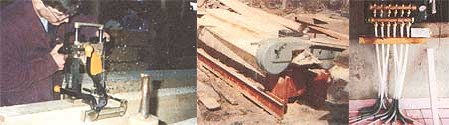

Left: Our precariously leaky roof over phase one was little more than a tarp and the hope for no rain. Right: The second story (phase two) taking shape: you can see the shiplap pine sleathing in the background, insulted with 4 x 8 pieces of panel insulation.